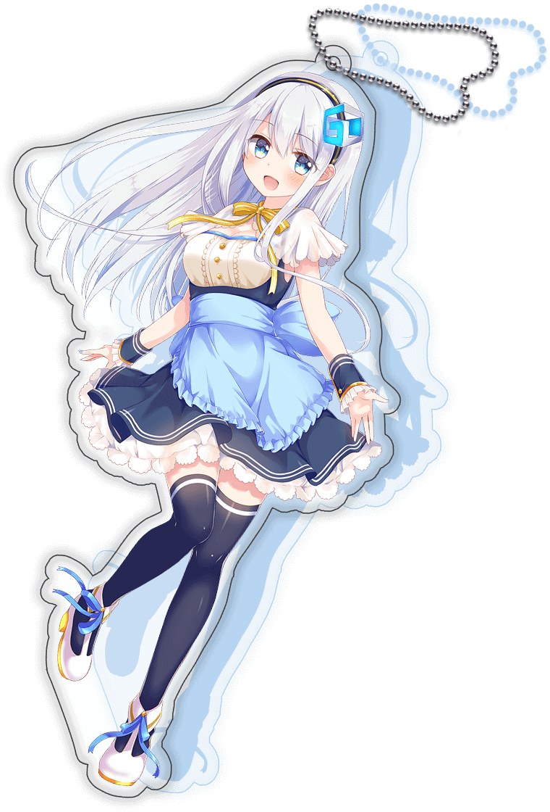
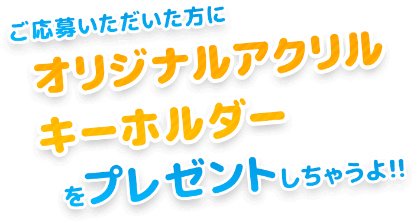
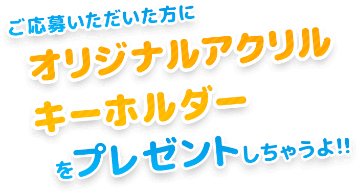
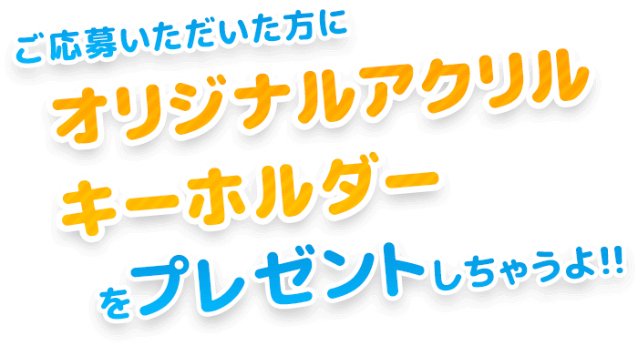

Twitterお名前募集キャンペーン
ツイートするだけで簡単応募ができます♪
※Twitterのアカウント登録が必要です。
応募締切
2016年
11/14(月)
14:00時まで
ハッシュタグ #グラデザキャラお名前募集キャンペーンでみんなの応募もチェック★
- ※景品の発送はキャンペーン終了後、12月頃の発送になります。
- ※ご応募いただいた名称は、後日当サイトで受賞作として発表させていただきます。また、グラデザの広告等でも掲載させていただく場合がございます。
- ※当選発表者については、作者として、TwitterIDを記載させていただきます。
- ※採用された名前の著作権、商標権、その他の知的財産権は全て、ご応募いただいた方から株式会社グランドデザインに無償にて譲渡いただいたものとさせていただきます。
- ※応募名は自作であり未発表のものに限らさせていただきます。
- ※応募者様のご住所不明や連絡不能などの理由により、ご連絡、または賞品のお届けができない場合は、応募を無効とさせていただきます。
- ※応募をもって本応募要項に同意されたものとみなします。
- ※当キャンペーンのご応募はインターネット（パソコン/スマートフォン）からのみとさせていただきます。なお、ご応募の際にかかるインターネット通信料は、お客様のご負担となります。
- ※ご応募はお一人様1回限りとさせていただきます
- ※当選者様には商品発送のためDMにてメッセージをお送りします。なお、当選者様にご記入いただいた情報は、抽選及び賞品を発送するためのもので、それ以外の目的では使用いたしません。また、お客様の同意なし第三者に開示提出することはありません。

 

